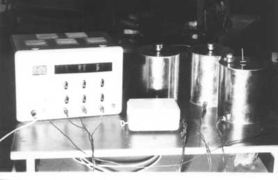
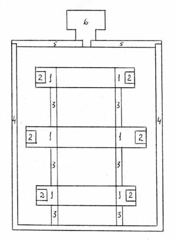
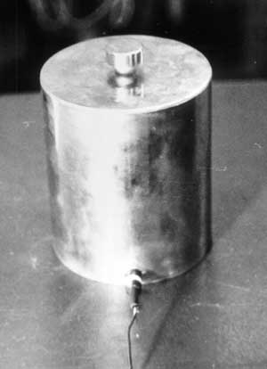
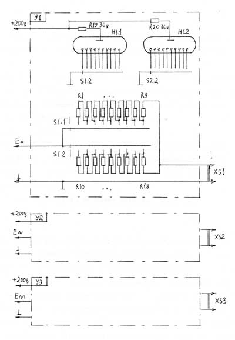
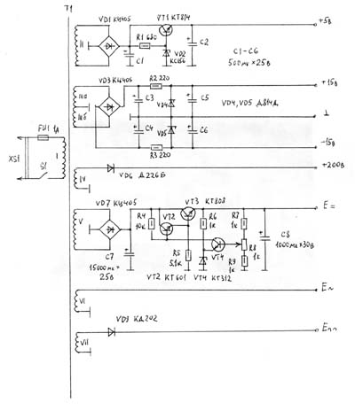
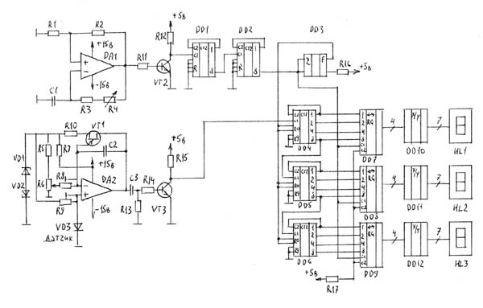
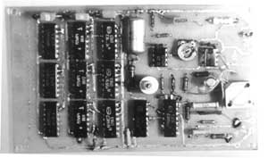
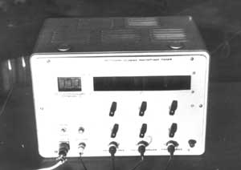
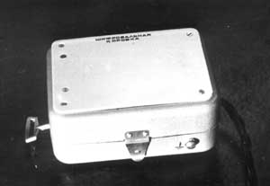
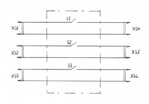

Источник слабых постоянных и
переменных
магнитных полей для проведения медицинских
и биологических экспериментов
1. Назначение устройства
Устройство "источник слабых магнитных полей" (ИСМП) предназначено для получения слабых постоянных, переменных и пульсирующих магнитных полей в экранированных камерах и изучения влияния этих полей на объекты различной природы. Кроме того, устройство позволяет контролировать температуру объектов при проведении экспериментов.
2. Технические характеристики
Род создаваемого поля:
- постоянное с коэффициентом пульсаций не более 1 %
- переменное синусоидальное с частотой 50 Гц
- пульсирующее однополупериодное с частотой 50 Гц
Рабочий объем каждой из трех камер: диаметр 100 мм, высота 100 мм.
Неоднородность поля в рабочем объеме не более 2 %.
Минимальная величина поля в рабочем объеме 0.01 Э (1 мкТл).
Максимальная величина поля в рабочем объеме 0.99 Э (99 мкТл).
Регулировка величины поля ступенчатая с шагом 0.01 Э (1 мкТл).
Погрешность установки заданного значения поля не более 4 %.
Ослабление внешнего магнитного поля (коэффициент экранирования) с частотой 0 ...
1000 Гц не менее чем в 50 раз.
Диапазон измерения температур 0 ... 100 0C.
Погрешность измерения температуры в рабочих камерах не более 2 0C в
диапазоне 0 ... 100 0C.
Индикация величины поля и температуры цифровая.
Нормальные условия эксплуатации:
- температура окружающего воздуха от 283 до 308 K (от +10 до +35 0C)
- относительная влажность воздуха до 80 % при температуре 293 K (+20 0C)
- атмосферное давление 750 + 50 мм рт. ст.
Питание прибора осуществляется от сети переменного тока напряжением 220 +
5 В, частотой 50 + 1 Гц.
Потребляемая мощность не более 50 В ∙ А.
3. Состав устройства
Рабочие камеры - 3 шт.
Блок питания, индикации величины поля и температуры камер - 1 шт.
Датчик температуры - 1 шт.
Шифровальная коробка - 1 шт.
4. Устройство и принцип работы
4.1. Конструкция
Устройство выполнено в виде переносного прибора с вынесенными рабочими камерами, устанавливаемыми в термостат (см. рис. 1).

Рис. 1. Внешний вид ИСМП: блок питания и индикации, рабочие камеры и шифровальная коробка.
Рабочие камеры выполнены из низкоуглеродистой отожженной стали, покрыты тонким слоем меди и никеля и соединяются с блоком питания, индикации величины поля и температуры с помощью кабелей. Блок питания и индикации ИСМП выполнен на П-образном шасси, смонтированном в металлическом кожухе. Печатные платы блока питания и силовой трансформатор расположены внутри шасси на его днище. Печатная плата цифрового термометра крепится к верхней части шасси. На передней панели устройства установлены переключатели ступенчатой регулировки величины поля, индикаторы величины поля, индикатор температуры, тумблер включения, предохранитель, клемма заземления, выходные гнезда. Отдельным блоком выполнено устройство шифрования (коммутации камер) в виде коробки, содержащей три тумблера включения камер. Устройство шифрования запирается на ключ.
4.2. Устройство рабочих камер
Для получения на небольшом расстоянии практически однородного магнитного поля используются катушки Гельмгольца [2, 4]. В идеальном случае они представляют собой два одинаковых кольцевых витка, соединенных между собой последовательно и расположенных друг от друга на расстоянии радиуса витка. Обычно катушки Гельмгольца состоят из двух катушек, на которых намотано некоторое количество витков, причем толщина катушки должна быть много меньше их радиуса. Напряженность магнитного поля в центре катушки может быть вычислена по формуле:
H = 0.716*wi/R [А/м], где w - число витков, i - ток обмотки, R - радиус катушки.
Для расчета магнитного поля в системе катушек Гельмгольца может быть также использована программа H_Coils [1].
Напряженность поля катушек Гельмгольца в центре системы отличается от поля, создаваемого на расстоянии 1/2 радиуса от центра по ее оси, примерно на 0.5 %. При точном определении напряженности магнитного поля следует принимать во внимание конечные размеры соленоида, учитывая высоту и ширину обмотки. Однородность магнитного поля значительно улучшается, если две пары катушек Гельмгольца расположить друг над другом. Улучшения однородности поля иногда добиваются также с помощью конических катушек, если они располагаются друг к другу узкими концами. При этом катушки конструируются таким образом, чтобы тангенс угла наклона между образующей конуса и осью, соединяющей центры катушек, был равен 2. В тех случаях, когда требуется иметь однородное по величине магнитное поле на значительной длине образца, катушки изготавливаются в форме эллипсоида вращения. Для изготовления такой катушки берется латунная трубка, на которую надевается из изоляционного материала каркас, обточенный в форме эллипсоида вращения. Намотка провода на этот каркас производится таким образом, чтобы на единицу длины по оси катушки приходилось одинаковое число витков. Напряженность магнитного поля по линии оси катушки однородна на 0.9 ее длины. Для создания однородного поля можно применять катушки, состоящие из двух обмоток, имеющих вид софокусных эллипсоидов вращения. Обмотки наматываются на них так, чтобы плоскости витков были перпендикулярны к длинной оси эллипсоида. При равномерном распределении витков и плотной их упаковке магнитное поле будет однородным в пространстве, ограниченном внутренним эллипсоидом. Высокую однородность поля имеет также катушка Максвелла, которая представляет собой систему из трех кольцевых параллельных катушек, витки которых расположены на общей сфере радиуса R, при этом отношение числа витков средней катушки к каждой из крайних должно быть равно 64/49. Радиус крайних катушек берется равным Rкр = Rср[4/7]1/2, а расстояние их до средней катушки l = Rср[3/7]1/2. Имеется также более простая катушка Максвелла, состоящая из трех катушек одинакового размера. Повысить однородность магнитного поля можно, поместив систему катушек в железный экран толщиной 2 - 3 мм. Экран может иметь форму цилиндра. При этом лучшая однородность магнитного поля получается, если размеры такой системы, выраженные через внутренний радиус цилиндра R, принять следующими: радиус катушек r = 0.59R, расстояние между катушками a = 0.53R и длина цилиндра l = 1.06R. Исходя из вышеизложенных соображений и были сконструированы рабочие камеры ИСМП. Их устройство показано на рис. 2.

Рис. 2. Устройство рабочей камеры ИСМП: 1 - каркасы катушек, 2 - обмотки катушек, 3 - изоляционные стойки, 4 - стальной цилиндр-экран, 5 - крышка, 6 - ручка.
В качестве исходной выбрана система из трех кольцевых катушек Максвелла. Все катушки расположены в параллельных друг другу плоскостях и соосно. Расстояния между каждой из концевых катушек и средней катушкой одинаковы и выбраны таким образом, чтобы катушки размещались на поверхности условного эллипсоида вращения. Вся система катушек помещается в цилиндр из низкоуглеродистой отожженной стали со съемной верхней крышкой. Этот цилиндр одновременно выполняет две функции: повышает однородность магнитного поля и экранирует систему от внешних магнитных полей, в частности, магнитного поля Земли. Число витков в каждой катушке равно 100, толщина провода 0.8 мм. Провод выбран максимально возможной толщины, чтобы сопротивление катушек постоянному току было минимальным. Намотка производилась виток к витку, чтобы направление поля от каждой катушки совпадало с ее осью. Такая конструкция рабочих камер обеспечивает создание однородного магнитного поля во всем рабочем объеме камеры, т. е. области пространства, ограниченной внутренними размерами системы катушек. Неоднородность магнитного поля не превышает 2 %. Катушки соединяются между собой последовательно. При этом сопротивление системы катушек постоянному току и переменному току частотой 50 Гц не превосходит 10 Ом. Погрешность установки заданного значения величины напряженности магнитного поля не превышает 4 %. Выводы катушек подпаиваются к разъему СГ-5, который устанавливается в отверстие, высверленное в нижней части экрана. Наличие разъема облегчает коммутацию рабочих камер с блоком питания, индикации величины поля и температуры камер через шифровальную коробку, а также делает все устройство ИСМП более транспортабельным. Внешний вид рабочей камеры показан на рис. 3.

Рис. 3. Рабочая камера ИСМП.
4.3. Устройство источников тока и индикации
Для того, чтобы в рабочих камерах установилось требуемое значение напряженности магнитного поля, необходимо пропускать через катушки вполне определенный ток, т. к. между значениями тока и напряженности магнитного поля в данном случае существует взаимнооднозначное соответствие. Поэтому задача получения магнитного поля необходимой напряженности сводится к построению источника тока соответствующей величины. Общее свойство всех источников тока может быть выражено соотношением ri/rн >> 1, где ri - внутреннее сопротивление источника тока, а rн - сопротивление нагрузки. Именно исходя из этого соотношения и минимизировалось сопротивление обмоток катушек. Так как по техническим условиям погрешность установки заданного значения напряженности магнитного поля не должна была превосходить 4 %, что не является слишком жестким требованием, в качестве источников тока были выбраны резистивные делители тока. Принципиальная схема устройства источников тока и индикаторов величины поля приведена на рис. 4.

Рис. 4. Принципиальная схема устройства источников тока и индикаторов величины поля.
Устройство состоит из трех одинаковых узлов. С помощью переключателя S1.1 задается напряженность магнитного поля с шагом 0.1 Э, а переключатель S2.1 задает магнитное поле с шагом 0.01 Э. Пользуясь этими двумя переключателями, можно задать любое значение поля от 0 Э до 0.99 Э с дискретностью 0.01 Э. Величины сопротивлений R1 - R18 подбираются при налаживании прибора по рассчитанным значениям тока. Переключатели S1.2 и S2.2 служат для коммутации цифровых индикаторов. При этом значение поля, получаемое в катушке, соответствует числу, отображаемому цифровыми газоразрядными индикаторами H1 и H2 типа ИН-14. Узлы У1, У2 и У3 подключаются к источникам постоянного, переменного частотой 50 Гц и пульсирующего однополупериодного частотой 50 Гц напряжения, входящих в состав блока питания. Действующие значения напряженностей соотносятся между собой как:
E= : E~ : E^^ = 23/2 : 2 : 1
При этом величина напряженности постоянного магнитного поля равна амплитудным значениям напряженности переменного и пульсирующего полей, что устраняет неоднозначность в толковании и интерпретации результатов измерений. Монтаж узлов У1, У2 и У3 выполнен навесным способом.
4.4. Блок питания
К блоку питания ИСМП предъявляются следующие требования. Он должен выдавать постоянное, переменное частотой 50 Гц (синусоидальное) и пульсирующее с частотой 50 Гц ("детектированная синусоида") напряжения с точностью не хуже 4 %, причем коэффициент пульсаций выпрямленного напряжения не должен превышать 1 %. Кроме того, блок питания должен выдавать напряжения +15 В и +5 В для питания цифрового термометра и +200 В для питания цифровых газоразрядных индикаторов. Принципиальная схема блока питания, удовлетворяющего этим требованиям, приведена на рис. 5.

Рис. 5. Принципиальная схема блока питания ИСМП.
Источник питания +5 В 0.5 А для питания цифровых микросхем серии К155 цифрового термометра построен по схеме параметрического стабилизатора на элементах VD1, C1, R1, VT1, VD2, C2. Источник питания операционных усилителей (+15 В 10 мА) построен аналогично. В каждом плече используются параметрические стабилизаторы. Так как токи, снимаемые с каждого плеча, незначительны, то вполне достаточно использовать гасящие резисторы R2, R3. Источник питания +200 В построен по схеме однополупериодного выпрямителя на диоде VD6. Источник постоянного напряжения E= для питания рабочих камер построен по схеме компенсационного стабилизатора. Значение выходного напряжения можно регулировать с помощью резистора R8. Опорное напряжение стабилитрона определяет минимальный уровень выходного напряжения. Для эффективной работы стабилизатора на коллекторе усилительного транзистора VT4 устанавливается среднее между опорным и выходным напряжение. Коэффициент стабилизации схемы определяется усилительными свойствами транзистора VT4 и сопротивлением резистора R4 и зависит от значения выходного напряжения. Максимальный ток стабилизации определяется регулирующими транзисторами VT2, VT3 и ограничен мощностью, рассеиваемой транзистором VT3. При больших выходных токах может наблюдаться уменьшение коэффициента стабилизации, что связано с шунтирующим действием составного эмиттерного повторителя, оказываемым на усилительный транзистор VT4. Но, так как в приборе ИСМП токи нагрузки невелики (не превосходят 60 мА), то реально такая ситуация не наблюдается. Источник переменного напряжения E~ - вторичная обмотка трансформатора T1 блока питания, а источник E^^ - однополупериодный выпрямитель на диоде VD9. Так как амплитуды этих напряжений не стабилизируются в самом блоке питания, необходимо все устройство ИСМП в целом питать через автотрансформатор или стабилизатор, обеспечивающий поддержание напряжения сети 220 В с точностью +5 В. При этом погрешность установки магнитного поля в рабочих камерах не превзойдет требуемого значения 4 %. Монтаж блока питания выполнен частично навесным, частично печатным монтажом.
4.5. Цифровой термометр
Цифровой термометр предназначен для измерения температуры в рабочих камерах в диапазоне 0 ... +99.9 0C. Он может также применяться для измерения температуры других объектов. Его разрешающая способность 0.1 0C, а погрешность измерений не превышает 0.5 0C в диапазоне +10 ... +60 0C и 2 0C в диапазоне 0 ... +100 0C. Время измерения температуры объекта (время релаксации датчика) не превышает 10 секунд. Принципиальная схема цифрового термометра (аналогичная приведенной в [5]) изображена на рис. 6.

Рис. 6. Принципиальная схема цифрового термометра ИСМП.
Температурная зависимость падения напряжения на p-n переходе при фиксированном токе через него и малая нелинейность характеристики температура-напряжение позволяют применять полупроводниковые диоды в качестве датчиков температуры. С такими датчиками можно изготавливать электронные термометры, не вводя в приборы специальные линеаризирующие устройства. Датчиком в цифровом термометре служит германиевый диод VD3. На операционном усилителе DA2 собран преобразователь температура-частота. Работает он следующим образом. Операционный усилитель совместно с конденсатором C2 выполняет функцию интегратора. Когда интегрирующий конденсатор C2 заряжается до напряжения -10 В, интегратор сбрасывается однопереходным транзистором VT1. Периодичность этого процесса зависит от температуры, поскольку от нее зависит падение напряжения на диоде VD3 и, соответственно, на неинвертирующем входе интегратора. При настроенном преобразователе приращение температуры датчика на 1 0C вызывает увеличение выходной частоты преобразователя примерно на 10 Гц. Термостабилизированный стабилизатор VD1, VD2 формирует опорное напряжение, которое определяет порог открывания однопереходного транзистора VT1, обеспечивает постоянный уровень напряжения на инвертирующем входе операционного усилителя и задает стабильный ток, протекающий через датчик температуры. На операционном усилителе DA1 собран генератор прямоугольных импульсов с частотой 100 Гц. Транзисторы VT2 и VT3 выполняют функцию согласования уровней выходных импульсов преобразователя, генератора и ТТЛ-микросхем. Счетчики DD1 и DD2 делят частоту генератора на 100 и формируют последовательность стробоимпульсов с частотой 1 Гц. Стробоимпульсы подаются на одновибратор DD3. Этот каскад осуществляет сброс счетчика импульсов DD4 - DD6. Частота импульсов сброса равна частоте стробоимпульсов (1 Гц). Счетчик импульсов считает определенное число импульсов, поступающих на него с преобразователя температура-частота. Чтобы исключить мерцание показаний индикаторов в момент пересчета импульсов, применяются буферные регистры, выполненные на микросхемах DD7 - DD9. Сигналы с выходов буферных регистров подаются на дешифраторы DD10 - DD12, которые преобразуют цифровые сигналы двоичного кода в сигналы "семисегментного" кода для управления полупроводниковыми цифровыми индикаторами с разделенными анодами сегментов (HL1 - HL3). Монтаж цифрового термометра выполнен печатным способом. Внешний вид печатной платы показан на рис. 7.

Рис. 7. Печатная плата цифрового термометра ИСМП.
4.6. Конструкция блока питания, индикации величины магнитного поля и температуры
Все узлы блока питания, индикации величины поля и температуры смонтированы на П-образном шасси, которое крепится к передней панели прибора и закрывается металлическим кожухом. На переднюю панель вынесены индикаторы температуры, индикаторы величины поля, переключатели-регуляторы величины поля, разъем для подключения рабочих камер через шифровальную коробку, разъем датчика температуры, разъем для подключения сетевого шнура с вилкой, тумблер включения прибора и сетевой предохранитель, а также клемма заземления. Внешний вид блока питания, индикации величины поля и температуры показан на рис. 8.

Рис. 8. Внешний вид блока питания, индикации величины магнитного поля и температуры ИСМП.
4.7. Шифровальная коробка
С целью исключения воздействия субъективного фактора на результаты эксперимента в приборе ИСМП для коммутации блока питания, индикации величины поля и температуры с рабочими камерами используется шифровальная коробка, запираемая на ключ. Внешний вид шифровальной коробки показан на рис. 9.

Рис. 9. Внешний вид шифровальной коробки ИСМП.
Шифровальная коробка позволяет лицу, контролирующему ход эксперимента, создать в рабочих камерах магнитное поле, характер которого неизвестен лаборанту, или вовсе отключить поле в любой из камер. Принципиальная схема шифровальной коробки приведена на рис. 10.

Рис. 10. Принципиальная схема шифровальной коробки ИСМП.
В коробке размещены три тумблера S1 - S3, служащие для отключения поля. Из коробки выходят с каждой стороны по три кабеля, оканчивающиеся разъемами XS1 - XS6. Шифровальная коробка закрывается крышкой, которую можно запирать на ключ. На коробке имеется клемма заземления, которую при необходимости можно подключать к заземляющему проводу.
Ссылки:
11.11.2003
29.03.2004
01.02.2006
22.06.2010
Альтернативные источники
энергии
Компьютеры и
Интернет
Магнитные поля
Механотронные системы
Перспективные
разработки
Электроника и
технология